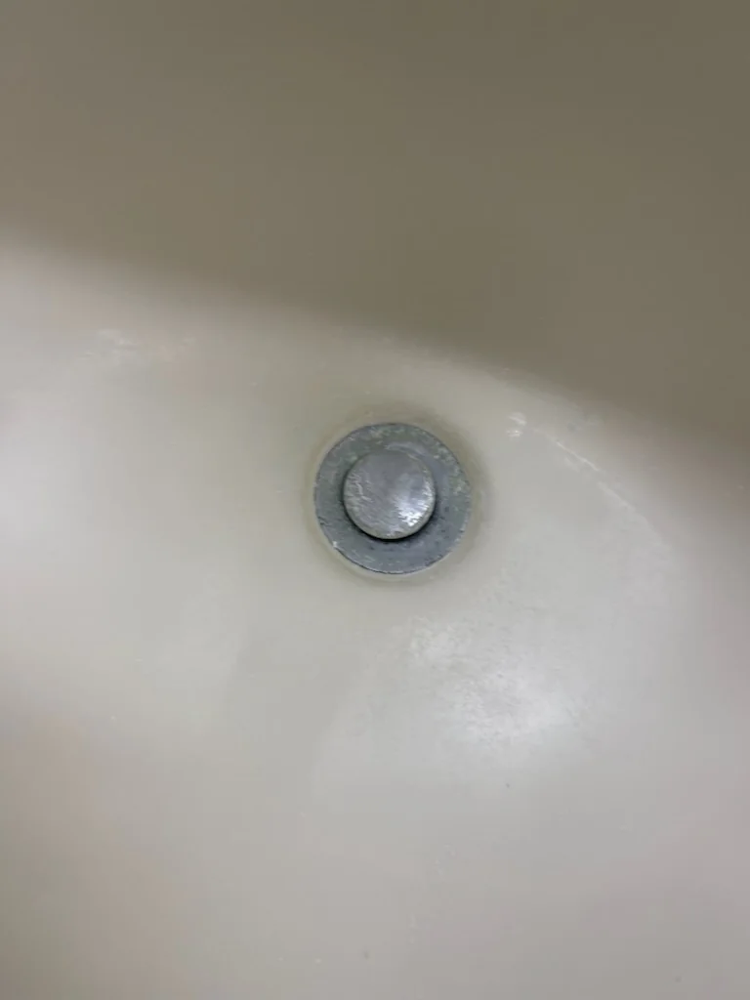
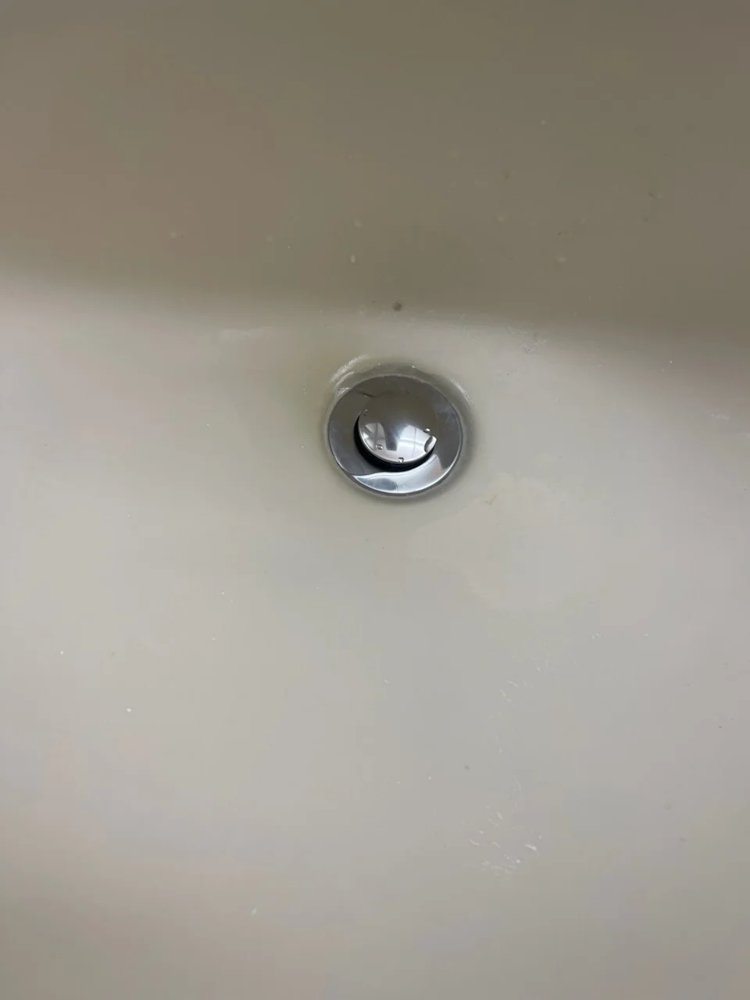
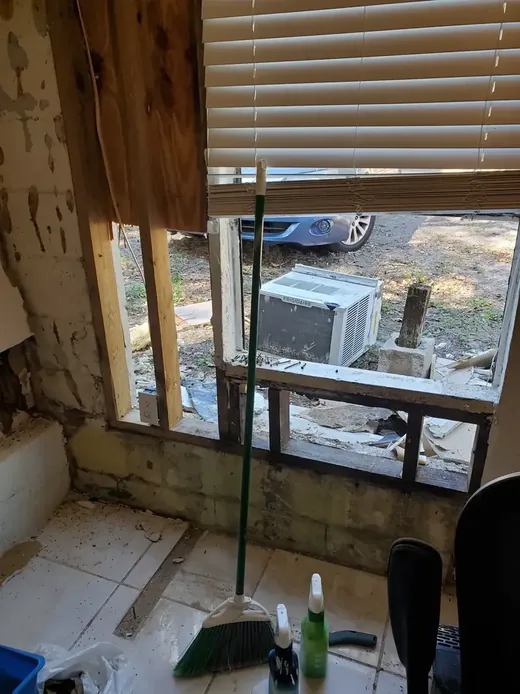
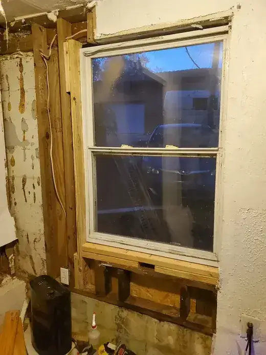

Small job carpenter near me
Trim, shelving, door frames, and repair carpentry for homeowners who need one dependable local carpenter-handyman.
Small job carpenter near me
Trim, shelving, door frames, and repair carpentry for homeowners who need one dependable local carpenter-handyman.
Carpentry repairs beyond a single board

Florida humidity swells jambs and shrinks shoe molding gaps seasonally. Repair carpentry keeps doors closing, trim tight, and shelves level without opening a full GC contract.
- Scarf-joint baseboard replacements in high-traffic halls
- Custom desk ledges and window seat platforms
- Pantry cleats sized for bulk goods and small appliances
- Garage overhead racks anchored to rafters when loading allows
- Exterior fascia patches before spot painting seasons
- Handrail returns and guardrail picket replacements on porches
- Blocking added inside walls for heavy mirrors or grab bars
- Threshold transitions between tile and laminate or LVP
Finish carpentry standards
We measure twice, cut once, and sand transitions flush before caulk. Paint-grade repairs are labeled so you know where primer is required. When a profile is discontinued, we salvage matching pieces from closet areas when possible.
Small-job carpentry for everyday home fixes

Carpentry services near me in Pinellas County rarely means framing a new addition. More often it is a split door jamb, a missing chunk of baseboard, or laundry shelving that must fit an awkward alcove. Knight Group handles repair carpentry and built-ins at handyman scale from Safety Harbor outward.
Carpentry tasks we handle in one visit
- Baseboard, casing, and shoe molding repair after water or pet damage
- Custom closet rods, pantry shelves, and garage storage cleats
- Door frame reinforcement, strike plates, and latch alignment
- Blocking for grab bars, TV mounts, and heavy mirrors (scope on site)
- Exterior wood trim patches where rot is localized and accessible
Repair carpentry vs. permitted structural work

We are transparent when a wall is load-bearing, when an engineer should review damage, or when a permit requires a general contractor. For typical interior trim, shelving, and door repairs in occupied homes, Knight Group provides written estimates and finish-ready work.
Pair carpentry with paint and drywall
New trim and patched jambs look unfinished until caulk, fill, and paint match the room. We coordinate trim repair, drywall patching, and trim painting so you are not scheduling three separate vendors.
Carpentry repair routes in North Pinellas

Dunedin bungalows and Palm Harbor ranches frequently need trim scarfs after flooring upgrades. Knight Group schedules carpentry blocks alongside paint days so jambs are caulked and enamel-ready before furniture returns.
Share profile photos of damaged molding — we stock common colonial and ranch profiles from local suppliers when possible.
Start a carpentry repair quote
Include profile photos of damaged trim and rough lengths when possible. We confirm lumber availability locally and whether paint or stain finish is part of the same visit sequence.
Frequently asked questions
Common questions homeowners ask before booking this type of work in Pinellas County.
What is a small job carpenter vs. a framing crew?
Knight Group handles repair carpentry, trim, shelving, and door frames at handyman scale — not full new-construction framing packages.
Can you match existing baseboard profiles?
We match common stock profiles when available locally. Unique historic moldings may need custom milling or careful salvage.
Do you install closet shelving systems?
Yes — rod and shelf combos, pantry layouts, and garage cleats are regular scopes. Share closet dimensions and photos when booking.
When does carpentry need a permit?
Load-bearing alterations, certain additions, and some exterior structural repairs require permits and licensed contractors — we tell you during the walkthrough.
Can carpentry and painting be one quote?
Yes — we often bundle trim repair, shelving, and finish painting for a single visit sequence.
Do you serve Clearwater for carpentry services near me?
Yes — Clearwater and the wider Pinellas County area are within our normal service routes.

Ready to schedule?
Tell us what needs attention and where the property is located.